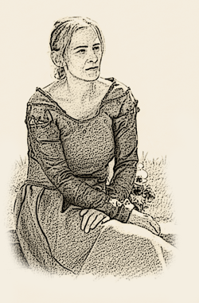
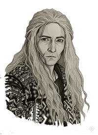

Charakter
|  |
Name: Bali Titel: Alias: Alter: 45 Jahre Geboren: Frühjahr Herkunft: Wüstenland Gilde: Grimsbane Gildensitz: Meldarn, Silmanore Wohnsitz: Meldarn, Silmanore |
Profession: Heilerin Wesen: Eichhörnchen |
| Conerfahrungen des Spielers | ||
|
2023 - Drachenfest 2024 - Drachenfest |

|  |
Name: Narvik Grimsbane Titel: von Meldarn Alias: grauer Wolf Alter: 75 Jahre Geboren: Winterkind Herkunft: Meldarn, Silmanore Gilde: Grimsbane Gildensitz: Meldarn, Silmanore Wohnsitz: Meldarn, Silmanore |
Profession: Krieger - Hexer Wesen: Fels in der Brandung mit Feuer |
| Conerfahrungen des Spielers | ||
|
08/2004 Taverne Leverkusen 05/2005 Galadoriath 06/2005 Taverne Leverkusen 06/2006 Taverne Leverkusen 07/2006 Drachenfest 09/2006 Katakomben Köln 04/2007 Katakomben Köln 06/2007 Katakomben Köln |
07/2007 Drachenfest 11/2007 Katakomben Köln 12/2007 Katakomben Köln 04/2008 Katakomben Köln 05/2008 Katakomben Köln 07/2008 Drachenfest 07/2008 Drachenfest 09/2008 Galadoriath 09/2008 Katakomben Köln |
07/2011 Drachenfest 10/2012 Katakomben Köln 05/2013 Katakomben Köln 07/2013 Drachenfest 07/2014 Drachenfest 03/2015 Taverne Corona 07/2023 Drachenfest 07/2024 Drachenfest |